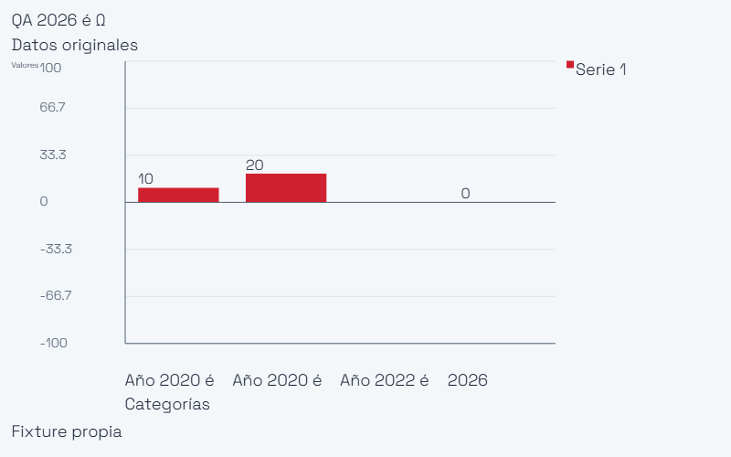
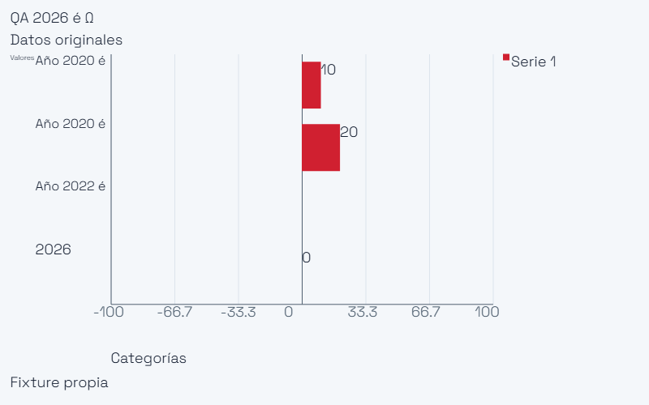
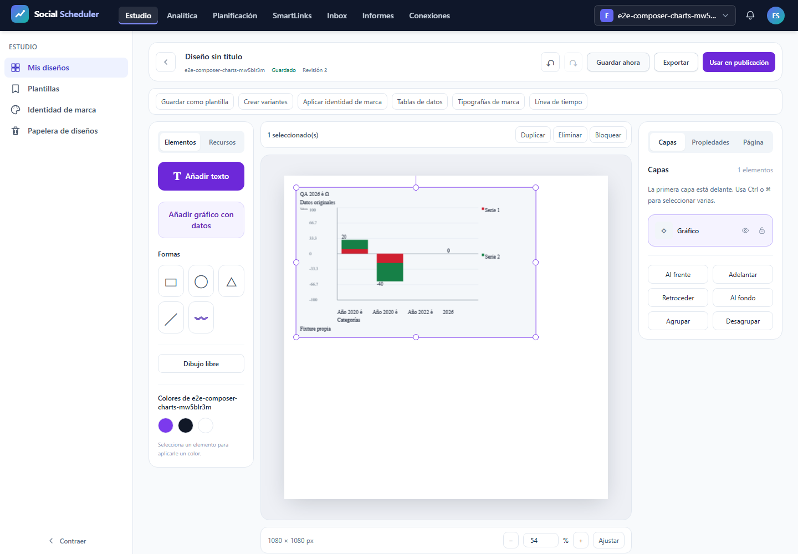

T12 C3charts — QA local
Resultado automático de esta ejecución: NO-PASS. Casos realmente ejecutados: 2 de 12 previstos. Inspección de figuras/PDF: pendiente, nunca inferida por colección, render o hash. No se cierra T12 ni el plan.
Ejecución y límites
Cuatro escenarios × 375/768/1440, un worker, cero reintentos y fail-fast1. Las ramas no alcanzadas no quedan acreditadas. SQLite, almacenamiento, cachés, rutas y usuarios ficticios aislados antes de Kernel; proof de rutas antes de usuarios. Sólo loopback. InterCSS externo tiene fixture vacía exacta; ninguna otra red externa está autorizada. Fuentes privadas SpaceGrotesk TTF y WOFF2 reales por UI de marca.
Job agregado COMMIT3GiB, killOnClose y sin breakaway; default del worker av-runtime3GiB intacto. Preflight físico6GiB anterior al UUID/servidor, piso3GiB cada100ms y plazo900s; capacidad desconocida o bajo presupuesto produce REFUSED. PHP CLI/servidor256M, Node512M. No se confunden COMMIT, RSS y memoria PHP; no se anuncia estrés52MB. Cualquier aborto invalida un verde anterior. PDF del informe en Job separado después del cierre real de procesos y puerto8080 IPv4/IPv6.
Resultados reales
| Proyecto | Escenario | Outcome |
|---|---|---|
| desktop | E2E28.01 ten real variants pinned saved dataset controls shared preview save reopen undo SVG PNG private font | expected |
| desktop | E2E28.02 server static SVG PNG PDF pinned archived historical selected pages actor brand boundary | unexpected |
| desktop | E2E28.03 invalid precision negative proportions cancel original typed table keyboard Inspector focus accessibility | skipped |
| desktop | E2E28.04 real 1000 rows twelve series twelve thousand bars shared SVG PNG semantic independent oracle guarded | skipped |
| mobile | E2E28.01 ten real variants pinned saved dataset controls shared preview save reopen undo SVG PNG private font | skipped |
| mobile | E2E28.02 server static SVG PNG PDF pinned archived historical selected pages actor brand boundary | skipped |
| mobile | E2E28.03 invalid precision negative proportions cancel original typed table keyboard Inspector focus accessibility | skipped |
| mobile | E2E28.04 real 1000 rows twelve series twelve thousand bars shared SVG PNG semantic independent oracle guarded | skipped |
| mobile-360 | E2E28.01 ten real variants pinned saved dataset controls shared preview save reopen undo SVG PNG private font | skipped |
| mobile-360 | E2E28.02 server static SVG PNG PDF pinned archived historical selected pages actor brand boundary | skipped |
| mobile-360 | E2E28.03 invalid precision negative proportions cancel original typed table keyboard Inspector focus accessibility | skipped |
| mobile-360 | E2E28.04 real 1000 rows twelve series twelve thousand bars shared SVG PNG semantic independent oracle guarded | skipped |
qa-gate literal
{
"verdict": "NO-VERDE",
"reason": "el runner reportó errores de ejecución",
"errors": [
"\u001b[31mTesting stopped early after 1 maximum allowed failures.\u001b[39m"
]
}
El recount exige 12 resultados sin skip/flaky/retry y todos los observadores, axe, red, materialización, deriva y cierre de procesos. El gate aislado no sustituye esa evidencia.
Observadores y alcance
XML y matrices SVG se leen con DOM nativo y un segundo parser independiente stdlib. IDs de barras, línea cero, categorías/series, colores y signos/null/cero/apilado/proporciones se contrastan con álgebra de fixtures propias, sin importar escena/geometría/renderer del producto. Tolerancia de coordenadas0,75px contempla el centro de ejes de1px; escala de amplitud0,012. PNG valida firma/CRC/filtros y píxeles/longitudes frente a SVG+fixture. Barras subpixel de la tanda12.000 se cuentan individualmente en SVG; PNG se contrasta además con cobertura fraccional/source-over independiente, error medio≤6/p95≤18 y centros de ejes/rejilla±2px excluidos. No se afirman12.000 píxeles separables.
El preview real se compara con el recorte correspondiente del PNG final: error RGB máximo4 y medio0,25. Glifos privados se contrastan después de exportar con Canvas2D cargado desde TTF original bajo otra familia eliminada al terminar: IoU≥0,80 y margen≥0,03 frente a Arial. SVG debe contener los bytes WOFF2 cuyo SHA/tamaño se observaron por HTTP200/MIME real. Los umbrales anteriores son criterios fijados antes de ejecutar, no resultados asumidos.
PDF del diseño es raster: una página y un XObject RGB realmente dibujado a tamaño correcto. Su RGB debe coincidir píxel a píxel con el PNG entregado, donde se verifican los glifos; no se presenta como texto extraíble/vectorial. La entrada real de Node y sus archivos materializados se observan pasivamente, sin reescritura: referencias seleccionadas, revisión antigua archivada y SHA original. Cancelación retiene una respuesta PHP200 real y conserva sus bytes; cierre del cliente y ausencia de aplicación tardía son aserciones explícitas.
Descargas reales guardan bytes, SHA y URL privada; las URLs publicables se reducen a ruta. Las cabeceras nativas se observan en el frontend propio; los Blob del cliente declaran que sus cabeceras no son observables, sin GET adicional. Errores HTTP sólo admiten método/ruta/status predeclarados y afirmados, y abortos exactos confirmados. Axe exige cero violaciones e incomplete, sin exclusiones.
Checklist manual pendiente
- [ ] Root inspecciona cada figura y cada página del PDF y registra su SHA actual en visual-inspection.json.
- [ ] Persona confirma legibilidad/densidad y calidad de diseño en375/768/1440 con sus datos reales.
- [ ] Otras22configuraciones, AV, Linux/VPS/R2 y datos52MB necesitan fases/pruebas propias; esta tanda no los acredita.
Resultado parcial y fallo aislado
El primer escenario desktop pasó las diez variantes: controles, guardar/reabrir/deshacer, SVG/PNG, fuente privada y oráculo SVG. En bar/column la nueva aserción de ticks también pasó: texto compacto y al menos12px efectivos. Son resultados parciales de un solo viewport; no se acepta T12 ni la matriz completa.
El segundo escenario supera la actualización PATCH y solicita el primer render estático SVG al servidor. El proceso real de Node se ejecuta con la revisión, tabla y fuente materializadas; el estado final es failed y conserva el error público del renderizador. Todavía no hay archivo servidor aceptado. Se investiga la causa con una sonda mínima, incluida la hipótesis de bloqueo de la fuente HTTP sintética por CSP. La hipótesis no se declara confirmada en este informe. Resultado real:1PASS,1FAIL,10noejecutados. Los observadores globales rechazaron la falta de la matriz completa; no se convierten en verde.
Las tres figuras siguientes son una selección diagnóstica explícita, no inspección de todas las variantes o viewports. Los bytes y resultados originales permanecen íntegros en el runtime privado. Los SVG y tick-legibility.json documentan la legibilidad parcial realmente alcanzada.
Core117.707s/COMMIT935878656B/mínimo físico10839220224B; finalize0.120s/32980992B aparte, sin fallos de recursos. PID25836 terminal y8080IPv4/IPv6libres. SHA de fuentes verificados antes y después del PDF; no se modifica el intento fallido ni se repite automáticamente.
Figuras diagnósticas representativas


